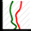

<!DOCTYPE html>
<html>
<head>
    <title>Radiosonde Flight Path</title>
    <meta charset="UTF-8">
    <!-- 
      Author: Mark Jessop
      Date: 2020-10-31
    
    -->
   
    <!-- CSS -->
    <link rel="stylesheet" href="https://unpkg.com/leaflet@1.0.3/dist/leaflet.css" />
    <link rel="stylesheet" href="https://maxcdn.bootstrapcdn.com/bootstrap/3.3.7/css/bootstrap.min.css" integrity="sha384-BVYiiSIFeK1dGmJRAkycuHAHRg32OmUcww7on3RYdg4Va+PmSTsz/K68vbdEjh4u" crossorigin="anonymous">
    <link rel="stylesheet" href="https://ppete2.github.io/Leaflet.PolylineMeasure/Leaflet.PolylineMeasure.css" />
    <link rel="stylesheet" href="https://ajax.googleapis.com/ajax/libs/jqueryui/1.12.1/themes/smoothness/jquery-ui.css">
    <link rel="stylesheet" href="./css/easy-button.css" />
    <link rel="stylesheet" href="./css/sondehubcard.css" />
    <link rel="stylesheet" href="./css/skewt.css" />
    <!-- JS -->
    <script src="https://cdnjs.cloudflare.com/ajax/libs/leaflet/1.3.1/leaflet.js"></script>
    <script src="https://ajax.googleapis.com/ajax/libs/jquery/3.3.1/jquery.min.js"></script>
    <script src="https://ajax.googleapis.com/ajax/libs/jqueryui/1.12.1/jquery-ui.min.js"></script>
    <script src="https://cdn.plot.ly/plotly-latest.min.js"></script>
    <script src="https://ppete2.github.io/Leaflet.PolylineMeasure/Leaflet.PolylineMeasure.js"></script>
    <script src="https://cdnjs.cloudflare.com/ajax/libs/d3/3.5.3/d3.min.js"></script>
    <script src="./js/Leaflet.Control.Custom.js"></script>
    <script src="./js/easy-button.js"></script>
    <script src="./js/utils.js"></script>
    <script src="./js/skewt.js"></script>
    

    <!-- Stylesheet to make map full-screen -->
    <style>
      body {
          padding: 0;
          margin: 0;
      }
      html, body, #map {
          height: 100%;
          width: 100%;
      }
    </style>

    <script language="javascript">

    var flight_data = [];
    var burst_idx = -1;
    var serial_number = "";
    var v1_data = false;

    var skewt;

    function error(){
      // Pop up an error message if there is no data available for the supplied sonde.
      console.log("No data :-(");
      $("#flight_header").html("<h1>Unknown or Invalid Serial Number</h1>");
    }

    function init() {

        // URL to historical data.
        var path_fields = window.location.pathname.split('/');
        //path_fields = ['S4610728']; // Testing only - sondehub v2 data
        //path_fields = ['S1130567']; // Testing - old sondehub v1 data
        var sonde_id = path_fields[path_fields.length - 1].replace(/^(DFM|M10|M20|IMET|IMET54|MRZ)-/,"");
        var sondehub_url = "https://api.v2.sondehub.org/sonde/" + sonde_id;


        // Rest of the code...

        // Initialise Map. Do not add Zoom control, as we want our title to be the topmost control.
        var map = L.map('map', {zoomControl: false});

        // Page Title
        // TODO: Better background.
        L.control.custom({
                position: 'topleft',
                content : "<div class='flight_header'><h1>Loading data, please wait...</h1></div>",
                id: 'flight_header',
                style   :
                {
                    margin: '5px',
                    padding: '0px 0 0 0',
                    cursor: 'pointer',
                }
            })
        .addTo(map);

        // Info Panel
        L.control.custom({
                position: 'bottomleft',
                content : "<div class='info_box'>Powered by<br/><a href='https://github.com/projecthorus/radiosonde_auto_rx/wiki'></a><br/>Track radiosondes live at: <a href='https://tracker.sondehub.org/'>https://tracker.sondehub.org/</a></div>",
                id: 'info_box',
                style   :
                {
                    margin: '5px',
                    padding: '0px 0 0 0',
                    cursor: 'pointer',
                }
            })
        .addTo(map);

        // Altitude Profile
        L.control.custom({
                position: 'bottomright',
                content : "<div class='alt_profile'></div>",
                id: 'alt_profile',
                style   :
                {
                    margin: '5px',
                    padding: '0px 0 0 0',
                    cursor: 'pointer',
                }
            })
        .addTo(map);

        // Tile Layers

        // Regular OSM (Default)
        var osm = L.tileLayer('http://{s}.tile.osm.org/{z}/{x}/{y}.png', {
            attribution: '&copy; <a href="http://osm.org/copyright">OpenStreetMap</a> contributors'
        }).addTo(map);

        // Satellite View
        var esri_sat_map = L.tileLayer(
            'http://server.arcgisonline.com/ArcGIS/rest/services/World_Imagery/MapServer/tile/{z}/{y}/{x}', 
            {
                maxZoom: 18,
            }
        );
          
        // OSM Topo Map Layer
        var osm_topo_map = L.tileLayer('https://{s}.tile.opentopomap.org/{z}/{x}/{y}.png', {
          attribution: '&copy; <a href="https://wiki.openstreetmap.org/wiki/OpenTopoMap">OpenTopoMap</a> contributors'
        });

        // Add Map control
        map.addControl(new L.Control.Layers({'OSM':osm, 'OpenTopo': osm_topo_map,'ESRI Satellite':esri_sat_map}));

        L.easyButton('', function(btn, map){
                plot_skewt();
            }, 'Plot Skew-T', 'plotSkewTButton', {
                position: 'topright'
            }
        ).addTo(map);

        // Now we can add the zoom control.
        new L.Control.Zoom({ position: 'topright' }).addTo(map);
        map.setView([0.0,0.0], 2);

        L.control.polylineMeasure({position: 'topright', showClearControl: true}).addTo(map);


        // Now Attempt to grab the flight path data.
        $.ajax({
             url: sondehub_url,
             dataType: 'json',
             async: true,
               success: function(data){
                // We have obtained something from the server.

                // Zero length array - No data available for this sonde!
                if (data.length == 0){
                  error();
                  return;
                }

                console.log("Got " + data.length + " points of data! Processing...");

                flight_data = data;

                // Build up the sonde flight path.
                // TODO: Styling
                var sonde_path = L.polyline([]);
                var alt_data = [];
                var time_data = [];
                var max_alt = -99999.0;

                var launch_marker;
                var landing_marker;

                var start_time = -1;

                for (let i = 0; i < data.length; i++){
                  // Extract data.
                  lat = parseFloat(data[i].lat);
                  lon = parseFloat(data[i].lon);
                  alt = parseFloat(data[i].alt);
                  timestamp = Date.parse(data[i].datetime);
                  sonde_path.addLatLng([lat, lon]);

                  // Initial observation time.
                  if (start_time == -1){
                    start_time = timestamp;
                  }

                  if (alt > max_alt){
                    max_alt = alt;
                    burst_idx = i;
                  }
                  
                  // Only allow times after the first observed time.
                  // Avoids issues with stations uploading old timestamps.
                  if ((timestamp - start_time) > 0){
                    alt_data.push(alt);
                    time_data.push(timestamp);
                  }
                }

                //console.log(alt_data);
                //console.log(time_data);

                // Launch Marker
                launch_lat = data[0].lat;
                launch_lon = data[0].lon;
                launch_alt = data[0].alt;
                launch_observer = data[0].uploader_callsign;
                launch_time = data[0].datetime;


                launch_icon = L.icon({
                  iconUrl: "./images/launch_marker.png",
                  iconSize: [15,15],
                  iconAnchor: [7.5,7.5]
                });

                launchIconTitle = 'First Observed Position (' + launch_lat + ', ' + launch_lon+ ', ' + Math.floor(launch_alt) + ' m) <br/>at ' + launch_time + ', by ' + launch_observer;

                launchMarker = L.marker([launch_lat, launch_lon],
                    {
                        title:launchIconTitle, 
                        icon: launch_icon
                    })
                    .bindTooltip(launchIconTitle,{permanent:false,direction:'right'})
                    .addTo(map);

                // Landing Marker
                landing_lat = data[data.length-1].lat;
                landing_lon = data[data.length-1].lon;
                landing_alt = data[data.length-1].alt;
                landing_observer = data[data.length-1].uploader_callsign;
                landing_time = data[data.length-1].datetime;

                landing_icon = L.icon({
                  iconUrl: "./images/landing_marker.png",
                  iconSize: [15,15],
                  iconAnchor: [7.5,7.5]
                });

                landingIconTitle = 'Last Observed Position (' + landing_lat + ', ' + landing_lon+ ',' + Math.floor(landing_alt) + ' m) <br/>at ' + landing_time + ', by ' + landing_observer;

                landingMarker = L.marker([landing_lat, landing_lon],
                    {
                        title:landingIconTitle, 
                        icon: landing_icon
                    })
                    .bindTooltip(landingIconTitle,{permanent:false,direction:'right'})
                    .addTo(map);

                if (burst_idx > -1){
                  // Burst Marker
                  burst_lat = data[burst_idx].lat;
                  burst_lon = data[burst_idx].lon;
                  burst_alt = data[burst_idx].alt;
                  burst_time = data[burst_idx].datetime;

                  burst_icon = L.icon({
                    iconUrl: "./images/burst_marker.png",
                    iconSize: [15,15],
                    iconAnchor: [7.5,7.5]
                  });

                  burstIconTitle = 'Burst at ' + Math.floor(burst_alt) + ' metres altitude.';

                  burstMarker = L.marker([burst_lat, burst_lon],
                      {
                          title:burstIconTitle, 
                          icon: burst_icon
                      })
                      .bindTooltip(burstIconTitle,{permanent:false,direction:'right'})
                      .addTo(map);
                }


                sonde_path.addTo(map);

                // Map bounds. We will update this with the flight path information.
                var layerBounds = new L.LatLngBounds();
                layerBounds.extend(sonde_path.getLatLngs());

                // Fit the map to the data.
                map.fitBounds(layerBounds);

                // Grab sonde type from the telemetry
                sonde_type = data[data.length-1].type;
                if(sonde_type == 'payload_telemetry'){
                  // Sondehub v1 data. Get the sonde type from the comment field.
                  sonde_type = data[data.length-1].comment.split(' ')[0];
                  v1_data = true;
                }


                var plot_data = [
                  {
                    x: time_data,
                    y: alt_data,
                    type: 'scatter',
                    mode: 'lines'
                  }
                ];
                var layout = {
                  //title: 'Altitude Profile',
                  xaxis: {
                    type: 'date',
                    title: 'Time (Local)'
                  },
                  yaxis: {
                    autorange: true,
                    type: 'linear',
                    title: 'Altitude (m)'
                  },
                  autosize: false,
                  width: 500,
                  height: 200,
                  margin: {
                    l: 50,
                    r: 10,
                    t: 10,
                    b: 40
                  }
                };
                Plotly.newPlot('alt_profile', plot_data, layout);

                // Update the header.
                $("#flight_header").html("<h1>SondeHub Historical Data <small>Serial: " + sonde_id + ", Type: " + sonde_type + "</small></h1>");

                serial_number = sonde_type + " " + sonde_id + " " + launch_time;
              }

        });
      }
    </script>

</head>
<body onLoad="javascript:init();">

<div id="skewt-dialog" title="Skew-T Plot" style='display:none;'>
    <div id="skewt-plot"></div>
</div>

<div id="map"></div>
</body>            
</html>
